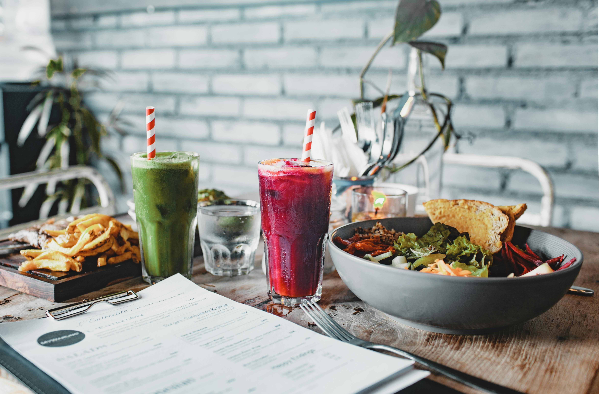

5 Kebiasaan Pagi yang Dilakukan Orang Sukses
Diposting 30 April 2025 • Kategori: Pengembangan Diri
Pagi hari menentukan harimu. Yuk intip 5 kebiasaan pagi yang dilakukan oleh para tokoh sukses dunia!
Diposting 30 April 2025
Baca SelengkapnyaTemukan artikel menarik seputar pengembangan diri, teknologi, gaya hidup, dan banyak lagi. Kami menyajikan konten inspiratif untuk membuat harimu lebih bermakna.

Diposting 30 April 2025 • Kategori: Pengembangan Diri
Pagi hari menentukan harimu. Yuk intip 5 kebiasaan pagi yang dilakukan oleh para tokoh sukses dunia!
Diposting 30 April 2025
Baca Selengkapnya
Diposting 28 April 2025 • Kategori: Teknologi
Apa saja teknologi yang akan booming tahun ini? Mulai dari AI, kendaraan otonom, hingga dunia virtual!
Diposting 28 April 2025
Baca Selengkapnya
Diposting 25 April 2025 • Kategori: Blogging
Ingin membuat tulisanmu banyak dibaca? Pelajari teknik menulis yang powerful dan bikin pembaca betah.
Diposting 25 April 2025
Baca Selengkapnya
Diposting 24 April 2025 • Kategori: Gaya Hidup
Menghadapi tahun 2025, penting untuk menjaga keseimbangan hidup. Yuk simak tips gaya hidup sehat untuk tubuh dan pikiran yang lebih baik!
Diposting 24 April 2025
Baca Selengkapnya